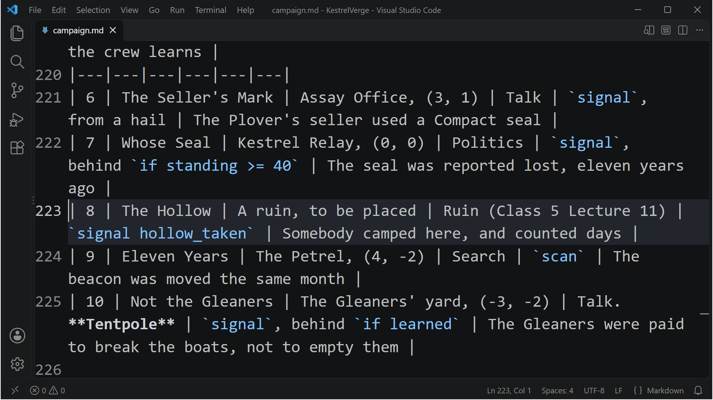

Class 6, Lecture 11 - Capstone studio¶
What you will have at the end¶
Act One of The Long Count, finished and played. Five evenings written in full and an ending, walked from the first lead to the last across three sittings on one save. Two of those evenings you will write between the first sitting and the second, with a game in progress, the way the other fifteen will be written.
And a page that holds the rest: Acts Two to Four as tables, the three rules for changing a file a crew is playing, and a rubric you can mark yourself against.

campaign.md at Act Two: the plan your campaign was built from.This lecture teaches nothing new. It is a studio: you build, you play, you write down what happened.
The video¶
About 6 minutes. Subtitles are available in the player.
Before you start¶
- Your campaign folder,
KestrelVerge, as Lecture 10 left it.kestrel_verge.amdmatchesc6-08-playtesting\example\.campaign.mdis still in the folder: Lecture 10 took it out of the zip, not off your computer. - Lecture 2's three lines and two records are in the file. Check one: the Gleaner hail has the answer Ask what became of the Tern's boats. If it does not, do Lecture 2's Steps 2 to 4 first. Today's last evening is built on that answer.
sbs lint KestrelVergesaysclean.- The game closed, and the save deleted:
C:\Cosmos\data\missions\common_data\saves\universe_save_the_kestrel_verge_1.yaml.
The order of this class, now that all eleven lectures are written: 1, 2, 3, 4, 5, 6, 7, 8, 9, 10, 11. Lecture 9 works in a copy and leaves your files alone.
Step 1 - The plan¶
| Sitting | Starts with | You play | Then |
|---|---|---|---|
| 1 | A new game, on the file as it is | Evenings 1 and 2 | Close the game. Write evenings 4 and 5 |
| 2 | Continue | Evenings 3 and 4 | Close the game |
| 3 | Continue | Evening 5, and the act's end | Fill in campaign.md |
A sitting here is a walk, from Lecture 8: alone, as fast as you can, to see that the steps are joined. Each one took about a minute and a half of game time when a script walked it. A crew will take an evening over each half of one.
Step 2 - Sitting one¶
- Hail the Compact, pay the levy, take the Escort. Do not fly it yet.
- Evening 1: engage One of Five, scan the Wren, engage Enter It.
- Evening 2: engage Two of Five, destroy two ships, engage Enter It Twice.
- Close every window of the game.
| When I stopped | Measured |
|---|---|
| The ship | Kestrel Relay, (0, 0) |
| Credits | 1200: 500, less the levy, plus 300 and 350 from the story and 150 of salvage from scanning the Wren |
| Standing with Hollin | 20 |
| The open step of The Long Count | Three of Five |
| Hidden | Four of Five and Five of Five, which are still stubs, and Five Boats |
| In hand | Hollin Compact: Escort |
Step 3 - Between sittings: write evening 4¶
The crew is two evenings in. Evening 4 is a stub: one step that goes to The Petrel and reveals evening 5. Give it an objective and a way home, from Lecture 4's pattern.
Open kestrel_verge.amd. Find ### [The Long Count: Four of Five](s04_go) and change
its Then: line.
Under that record, above Five of Five, add two steps.
### [The Long Count: Her Beacon](s04_scan)
---
Scope: shared
Starts when: revealed
Done when: scan 1 derelict
Objective: Scan the Petrel from Science
Then: reveal s04_home
---
The Petrel is holed and tumbling, and her beacon has counted every day of forty years. Get Science close enough to read it.
### [The Long Count: Enter It a Fourth Time](s04_home)
---
Scope: shared
Starts when: revealed
Done when: reach 0, 0
Then: reveal s05_go
Reward: 300 credits
---
The Petrel's beacon was moved, eleven years ago, by somebody who knew how. Take that home to Kestrel Relay.
This is safe against the live save, by Lecture 9's list. Four of Five is still hidden,
so the crew has not finished it, and its new Then: line will be read when they do.
The two new steps are ahead of the crew, not behind them.
Step 4 - Between sittings: write evening 5¶
Evening 5 is in the Gleaners' yard, and it is a talk evening, like evening 3. This time the answers are held back until the crew has asked the right question first. That is Lecture 2's fact, doing a job.
Find ### [The Long Count: Five of Five](s05_go) and change its Then: line.
Under that record, above Five Boats, add the objective.
### [The Long Count: The Skua's Price](s05_ask)
---
Scope: shared
Starts when: revealed
Done when: signal skua_asked
Objective: Hail the Gleaners on Comms
Then: reveal act1_close
---
The Skua is in the yard, in pieces, and the Gleaners kept her log. Hail them and get it. They will remember how you asked.
They will not sell what they have not owned up to. Ask them first what became of the Tern's boats.
In the Gleaner hail, above - [Back away], add two answers.
- [Buy the Skua's log](gleaner_skua) if learned the gleaners broke a boat ; costs 300 credits, signal skua_asked, learn the skua was emptied
- [Tell them the Compact knows what they broke](gleaner_skua_cold) if learned the gleaners broke a boat ; signal skua_asked, earns gleaners fearsome 35, learn the skua was emptied
And at the end of the file, the two records they lead to.
### [The Skua's Log](gleaner_skua)
---
Speaker: gleaners
---
% Paid. Her log, captain. Nobody was aboard when we took her. Somebody had been, and had left tidy.
### [The Skua's Log, Thrown](gleaner_skua_cold)
---
Speaker: gleaners
---
% Take it, then. We broke a boat. We did not empty one. Tell your Compact that.
Both answers send the signal, so either finishes the evening, and they differ in what
the Gleaners think afterward: Lecture 7's shape. The if learned is new here. A crew
that hails the Gleaners cold does not see either answer. They have to ask what became
of the boats first. So the step's second paragraph tells them: a crew that is stuck at a
decision reads the Quest Log, and the hint is there.
Both answers also teach a new fact, the skua was emptied. Nothing asks for it yet.
It is there so that Act Two can tell a crew that has finished evening 5 from one that
has not. Step 9 uses it.
Step 5 - Between sittings: one change to what the crew has seen¶
The crew's open step is Three of Five. Its title was a placeholder. Change it, and leave its key alone.
That is the safest change on Lecture 9's list. The save knows the step by s03_go.
Step 6 - Between sittings: a step for Act Two to stand on¶
Act One ends with Five Boats, and Act Two is not written. When it is, something has to show its first lead to a crew whose save already has Five Boats marked Done. A finished step does not reveal again (Lecture 9), so that something has to be in the file before the crew gets there. It is one more step, and it stays open between the acts.
Find ### [The Long Count: Five Boats](act1_close) and add a Then: line under its
Done when:.
Above the heading ## [Dialogue](dialogue), with an empty line after it, add the step.
### [The Long Count: While They Read](act2_wait)
---
Scope: shared
Starts when: revealed
Done when: signal act2_begins
---
Five logs are on the Compact's table, and it will take them a while to read what you already know. They will call.
Until they do, the Verge still has work in it.
-  The Compact's patrols and escorts, at Kestrel Relay
-  The Tern's manifest, if you have not read it yet
Nothing sends act2_begins yet. That is the point: the step is open, and it waits for
Act Two to finish it.
It may stay open for weeks of evenings, so its text is the page the crew reads most. Give it more than the wait: a paragraph, and a short icon list (Lecture 6) of what the Verge still holds for them while the Compact reads.
The finished file is in example\kestrel_verge.amd.
Step 7 - Check it¶
== kestrel_verge.amd ==
[WARNING] line 463:19: `act2_wait` waits for the signal `act2_begins`, and nothing in the mission sends it, so that wait never ends. Check the spelling against the line in the story that sends it (unfired-signal)
1 amd + 1 mast file(s): 0 error(s), 1 warning(s)
One warning, and for once it is true. Nothing sends act2_begins, because Act Two does
not exist. Leave it. It is your reminder of the first line Act Two has to write.
For this lecture, your checkpoint is that one warning and no others.
Each row below was made on purpose, one change to the finished file, then linted. Every row has the one warning above as well.
Mistakes lint finds
| The mistake | What lint says |
|---|---|
The stub's Then: left as it was, Then: reveal s05_go |
A warning: "The Long Count: Her Beacon waits to be revealed, and nothing reveals it ... It never appears" (never-revealed) |
No Then: reveal s05_go on the new home step |
The same warning, about Five of Five (never-revealed) |
A key used twice: the new step given the key s01_scan |
Three warnings: "is the key of 2 records in the same place ... the game keeps the first and drops the rest" (duplicate-key), ambiguous-reference, and dangling-reveal |
The fact misspelled on one answer: if learned the gleaners broke a baot |
A warning: "asks for a fact called the gleaners broke a baot ... so it is never known" (guard-learned-unknown) |
A mistake lint cannot see
| The mistake | What the game does |
|---|---|
signal skua_asked left off one of the two answers |
Lint says nothing more than the one warning. Lecture 7 played this mistake on evening 3: that answer takes its credits and the step stays open |
Every warning in the first table is the same message: the spine is cut. Run lint after every step you add, and do not start a sitting with one of them on the screen.
Step 8 - Sitting two¶
Start the game with the same line. Do not delete the save.
| Do | What was measured | |
|---|---|---|
| 1 | Helm: open the Quest Log | The open step reads The Long Count: The Plover. Your new title reached a game in progress |
| 2 | Evening 3: engage it | The ship is at the Assay Office. The Escort from sitting one pays on arrival |
| 3 | Comms: hail the Deepwell, Pay the search fee for the Plover's bill of sale | The Plover's Price is Done. Credits are 1350 |
| 4 | Engage Enter It Again | Home. Credits are 1650. Four of Five is in the Quest Log |
| 5 | Evening 4: engage Four of Five | The ship is at The Petrel, (4, -2). Her Beacon is in the Quest Log, Active. A step you wrote an hour ago, revealed by a stub the crew had never seen |
| 6 | Science: scan the Petrel | Her Beacon is Done. Her salvage pays 150: credits are 1800 |
| 7 | Engage Enter It a Fourth Time | Home. Credits are 2100. Five of Five is in the Quest Log |
Close every window of the game.
| When I stopped | Measured |
|---|---|
| Credits | 2100 |
| Standing | Hollin 25, Deepwell 20 |
| The open step of The Long Count | Five of Five |
Step 9 - Sitting three¶
The same line again.
| Do | What was measured | |
|---|---|---|
| 1 | Evening 5: engage Five of Five | The ship is at the Gleaners' home, (-3, -2). The Skua's Price is in the Quest Log |
| 2 | Comms: Hail The Gleaners | Four answers: Tell them you go where you like, Ask what became of the Tern's boats, Sell them a copy of the Count, Back away. Neither of your new ones |
| 3 | Ask what became of the Tern's boats, then hail again | Six answers. Buy the Skua's log and Tell them the Compact knows what they broke are there now |
| 4 | Buy the Skua's log | "Paid. Her log, captain. Nobody was aboard when we took her. Somebody had been, and had left tidy." Credits are 1800. The Skua's Price is Done, and Five Boats is in the Quest Log |
| 5 | Engage Five Boats | Home. The act's ending pays 1000: credits are 2800. While They Read is in the Quest Log |
| 6 | Helm: the Quest Log | Every step of The Long Count but that one is Done. The Tern's Manifest and two Class 5 leads are still open, for a crew that wants them |
Close the game. If you start it once more, the game continues, and it is not over:
Act One has no Win: in it. The crew is at Kestrel Relay with one quiet line of The
Long Count open, which is the right place to be when Act Two arrives.
What sending Act Two will take. This was played, as a fourth sitting, with three things added to the file:
| Added for Act Two | Where |
|---|---|
Then: reveal s06_go |
In the fence of While They Read, which is still open |
Evening 6's first step, s06_go, with Starts when: revealed |
The Narrative chapter |
An answer that sends the signal: - [Ask what the Compact made of the five logs](hollin_next) if learned the skua was emptied ; signal act2_begins, and the record it leads to |
The Hollin hail |
| In the continued game | What was measured |
|---|---|
| At the start | While They Read is open. Evening 6's step is hidden |
| The Compact's hail | The new answer is among the answers, because this crew knows the skua was emptied |
| The answer pressed | While They Read is Done, and The Long Count: The Seller's Mark is in the Quest Log |
So Act Two reaches a crew that finished Act One, and a crew that starts Act One next year meets the same steps in the same order.
Two shorter ways were tried first, on a save where Five Boats was already Done and there was no step in between. Neither worked.
| Tried | What happened |
|---|---|
Then: reveal s06_go added to Five Boats |
Evening 6's step stayed hidden. A finished step does not reveal again |
An answer with ; reveal s06_go |
The answer was offered and the Compact spoke, and the step stayed hidden. In this game an answer's reveal does not reach a step of the story. Lint warns on that answer: "; reveal s06_go does nothing to a quest: reveal is what Then: says" (outcome-quest-verb) |
Both were tried again on the game as it is now, on a small test step, and both still
fail the same way. That lint warning ends by suggesting another word, ; accepts. On
the same test step an answer with ; accepts and the step's key did open it: the
hidden step was Active and in the Quest Log. That was one press in one game. It was not
played through a Continue, and this capstone was not walked again with it. The step in
between is the way that was played from end to end, so it is the way this page builds.
If you have already sent an Act One with no step in between, Lecture 9 has the cure:
give evening 6's first step Starts when: at once. The crew that has finished gets it.
A crew that starts fresh sees it on evening 1, so say in its text that it is for later.
Step 10 - The other three acts¶
Open campaign.md. Three things go on it today.
Bring Act One's table up to date. Evenings 3, 4 and 5 are written in full now. Say what each objective ends with.
Write down what you played. A small table: sitting, what you started with, the evenings, the credits and standing at the end, the open step when you stopped. The numbers in Steps 2, 8 and 9 are the worked example's.
Outline Acts Two, Three and Four. One table an act, one row an evening: a title, a
place, a style from Lecture 7's rotation, and the kind of ending the objective has. Do
not write a single record. The finished page is in example\campaign.md. Four rules
shaped its outline:
| Rule | Where it comes from |
|---|---|
| No style twice running, and every evening has an owner | Lecture 7 |
One Win: in the whole campaign, on evening 20 |
Lecture 5. A campaign that is won shows one card on the next Continue and plays on (Lecture 2), so the finale is not a dead end, but it is still one finale |
| A fact for every door that should open once and stay open; standing for every door that can close again | Lectures 2 and 6 |
| One evening in a ruin, in Act Two | Optional. A ruin on the map is Class 5 Lecture 11: one file, one landmark, and two signals the game sends. It is remembered between evenings, which is what makes it fit here. If you have not taken that lecture, make evening 8 a search |
Then add the three rules from Lecture 9 at the bottom of the page, under
## Rules for changes.
Step 11 - The rubric¶
Mark yourself. Twelve points make an act you can run.
| Worth | You have it when | |
|---|---|---|
| 1 | 1 | sbs lint KestrelVerge gives the one warning about act2_begins, and nothing else |
| 2 | 2 | Three sittings on one save, and each started where the last one stopped |
| 3 | 2 | At the end of the third, every step of Act One is Done but the one that waits for Act Two, and mast.runtime.log is empty |
| 4 | 1 | Two evenings were written between sittings, and appeared when the crew reached them |
| 5 | 1 | A title you changed between sittings was the title in the continued game |
| 6 | 1 | One evening's answers are held back by a fact, and you saw them appear |
| 7 | 1 | campaign.md has Acts Two to Four as tables, with one finale |
| 8 | 1 | campaign.md has your three rules for changes |
| 9 | 2 | A crew that is not you has played evening 1, and you watched without helping |
What nobody has played¶
Be as honest with yourself as this page is with you.
| Nobody has | So |
|---|---|
| Sat a crew down to The Long Count | Every time on your sheets is a plan. Lecture 8's log is how you find out |
| Scanned the Wren or the Petrel from a Science console, or destroyed the Dunlin's two ships with real weapons | In the check behind this page a script told the game the scan and the kills had happened. Whether one light cruiser wins evening 2 is for your crew to say |
| Seen any of this on a screen | The Quest Log lines and Comms answers on this page are what the game was asked to show |
| Played evenings 6 to 20 | They are tables. That is what an outline is |
If something goes wrong¶
| What you see | Likely cause |
|---|---|
| Sitting two is a new game | The save was deleted, or the title changed, or New Game was chosen |
| The open step still says Three of Five | The file was not saved before sitting two, or you changed the key as well as the title |
| At The Petrel, nothing new is in the Quest Log | Four of Five's Then: still says reveal s05_go. Lint warned you |
| Her Beacon never finishes | Nothing has been scanned. The step wants one scan of something with the role derelict |
| The Gleaners never offer the Skua's log | The crew has not pressed Ask what became of the Tern's boats. Or the words after if learned are not the words after learn: run lint |
| The log is bought and the step stays open | That answer has no signal skua_asked |
| A step you added behind the crew never appears | Lecture 9, Step 6: a new key, and Starts when: at once |
Lint: "waits for the signal act2_begins, and nothing in the mission sends it" |
Nothing is wrong. Step 6 says why |
Exercise¶
- Do the studio on your own campaign: three sittings, with two evenings written after the first.
- Make one of those evenings turn on a fact.
- Outline your other three acts. One table each.
- Mark the rubric. Write the number at the top of
campaign.md, with the date. - Run evening 1 for a crew, with Lecture 8's log in your hand.
- Change one thing because of what the log says. Rehearse the change on a copy of their save, as Lecture 9 showed, before you send it.
Checkpoint¶
You are done when all five are true:
- Act One is five full evenings and an ending, and lint gives only the warning about
act2_begins. - You played it to the end across three sittings on one save.
- Something you wrote between sittings reached the game in progress.
campaign.mdholds Acts Two to Four, and your rules for changes.- Your rubric adds up to ten or more.
Next¶
That is the course. You have a universe, a campaign with its first act played, a plan for the other three, and the habits to write them while a crew is playing: lint after every change, walk it alone, watch a table without helping, and never change a key the save has seen.
Write evening 6.
Further reading¶
- Lecture 2 of this class: facts, and what the save keeps.
- "What the game remembers" in the Open Universe writer's walkthrough: the save file, line by line, and which changes to a running campaign are safe.
- Lecture 9: the list of safe changes, and the lab.
- Lecture 10, Step 7: sending Act Two. Step 9 of this page is the measured version.
- Class 5 Lecture 11: a ruin on the map, for evening 8.
- Class 5 Lecture 15: an Admiral beside the crew, if a later act wants one.
Download this lecture's finished files (a zip of its example folder).